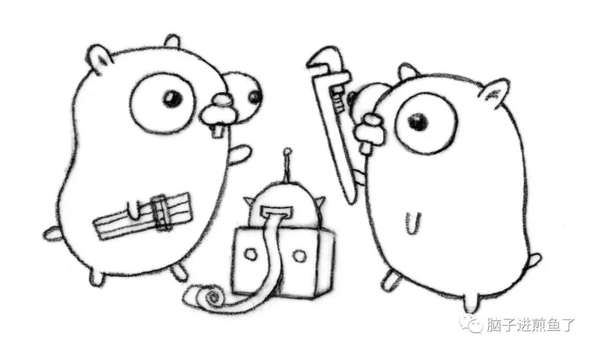

我们在写代码的时候，有时候会想这个变量到底分配到哪里了？这时候可能会有人说，在栈上，在堆上。信我准没错…

但从结果上来讲你还是一知半解，这可不行，万一被人懵了呢。今天我们一起来深挖下 Go 在这块的奥妙，自己动手丰衣足食！
问题
1 | type User struct { |
开局就是一把问号，带着问题进行学习。请问 main 调用 GetUserInfo 后返回的 &User{...}。这个变量是分配到栈上了呢，还是分配到堆上了？
什么是堆/栈
在这里并不打算详细介绍堆栈，仅简单介绍本文所需的基础知识。如下：
- 堆（Heap）：一般来讲是人为手动进行管理，手动申请、分配、释放。一般所涉及的内存大小并不定，一般会存放较大的对象。另外其分配相对慢，涉及到的指令动作也相对多。
- 栈（Stack）：由编译器进行管理，自动申请、分配、释放。一般不会太大，我们常见的函数参数（不同平台允许存放的数量不同），局部变量等等都会存放在栈上。
今天我们介绍的 Go 语言，它的堆栈分配是通过 Compiler 进行分析，GC 去管理的，而对其的分析选择动作就是今天探讨的重点。
什么是逃逸分析
在编译程序优化理论中，逃逸分析是一种确定指针动态范围的方法，简单来说就是分析在程序的哪些地方可以访问到该指针。
通俗地讲，逃逸分析就是确定一个变量要放堆上还是栈上，规则如下：
- 是否有在其他地方（非局部）被引用。只要有可能被引用了，那么它一定分配到堆上。否则分配到栈上。
- 即使没有被外部引用，但对象过大，无法存放在栈区上。依然有可能分配到堆上。
对此你可以理解为，逃逸分析是编译器用于决定变量分配到堆上还是栈上的一种行为。
在什么阶段确立逃逸
在编译阶段确立逃逸，注意并不是在运行时。
为什么需要逃逸
这个问题我们可以反过来想，如果变量都分配到堆上了会出现什么事情？例如：
- 垃圾回收（GC）的压力不断增大。
- 申请、分配、回收内存的系统开销增大（相对于栈）。
- 动态分配产生一定量的内存碎片。
简单来说，就是频繁申请并分配堆内存是有一定 “代价” 的。会影响应用程序运行的效率，间接影响到整体系统。
因此 “按需分配” 最大限度的灵活利用资源，才是正确的治理之道。这就是为什么需要逃逸分析的原因，你觉得呢？
怎么确定是否逃逸
第一，通过编译器命令，就可以看到详细的逃逸分析过程。而指令集 -gcflags 用于将标识参数传递给 Go 编译器，涉及如下：
-m会打印出逃逸分析的优化策略，实际上最多总共可以用 4 个-m，但是信息量较大，一般用 1 个就可以了。-l会禁用函数内联，在这里禁用掉 inline 能更好的观察逃逸情况，减少干扰。
1 | $ go build -gcflags '-m -l' main.go |
第二，通过反编译命令查看
1 | $ go tool compile -S main.go |
注：可以通过 go tool compile -help 查看所有允许传递给编译器的标识参数。
逃逸案例
案例一：指针
第一个案例是一开始抛出的问题，现在你再看看，想想，如下：
1 | type User struct { |
执行命令观察一下，如下：
1 | $ go build -gcflags '-m -l' main.go |
通过查看分析结果，可得知 &User 逃到了堆里，也就是分配到堆上了。这是不是有问题啊…再看看汇编代码确定一下，如下：
1 | $ go tool compile -S main.go |
我们将目光集中到 CALL 指令，发现其执行了 runtime.newobject 方法，也就是确实是分配到了堆上。这是为什么呢？
分析结果
这是因为 GetUserInfo() 返回的是指针对象，引用被返回到了方法之外了。因此编译器会把该对象分配到堆上，而不是栈上。
否则方法结束之后，局部变量就被回收了，岂不是翻车。所以最终分配到堆上是理所当然的
再想想
那你可能会想，那就是所有指针对象，都应该在堆上？并不。如下：
1 | func main() { |
你想想这个对象会分配到哪里？如下：
1 | $ go build -gcflags '-m -l' main.go |
显然，该对象分配到栈上了。很核心的一点就是它有没有被作用域之外所引用，而这里作用域仍然保留在 main 中，因此它没有发生逃逸。
案例二：未确定类型
1 | func main() { |
执行命令观察一下，如下：
1 | $ go build -gcflags '-m -l' main.go |
通过查看分析结果，可得知 str 变量逃到了堆上，也就是该对象在堆上分配。但上个案例时它还在栈上，我们也就 fmt 输出了它而已。这…到底发生了什么事？
分析结果
相对案例一，案例二只加了一行代码 fmt.Println(str)，问题肯定出在它身上。其原型：
1 | func Println(a ...interface{}) (n int, err error) |
通过对其分析，可得知当形参为 interface 类型时，在编译阶段编译器无法确定其具体的类型。因此会产生逃逸，最终分配到堆上。
如果你有兴趣追源码的话，可以看下内部的 reflect.TypeOf(arg).Kind() 语句，其会造成堆逃逸，而表象就是 interface 类型会导致该对象分配到堆上。
案例三、泄露参数
1 | type User struct { |
执行命令观察一下，如下：
1 | $ go build -gcflags '-m -l' main.go |
我们注意到 leaking param 的表述，它说明了变量 u 是一个泄露参数。结合代码可得知其传给 GetUserInfo 方法后，没有做任何引用之类的涉及变量的动作，直接就把这个变量返回出去了。
因此这个变量实际上并没有逃逸，它的作用域还在 main() 之中，所以分配在栈上。
再想想
那你再想想怎么样才能让它分配到堆上？结合案例一，举一反三。修改如下：
1 | type User struct { |
执行命令观察一下，如下：
1 | $ go build -gcflags '-m -l' main.go |
只要一小改，它就考虑会被外部所引用，因此妥妥的分配到堆上了
总结
在本文我给你介绍了逃逸分析的概念和规则，并列举了一些例子加深理解。但实际肯定远远不止这些案例，你需要做到的是掌握方法，遇到再看就好了。除此之外你还需要注意：
- 静态分配到栈上，性能一定比动态分配到堆上好。
- 底层分配到堆，还是栈。实际上对你来说是透明的，不需要过度关心。
- 每个 Go 版本的逃逸分析都会有所不同（会改变，会优化）。
- 直接通过
go build -gcflags '-m -l'就可以看到逃逸分析的过程和结果。 - 到处都用指针传递并不一定是最好的，要用对。
这块的知识点。我的建议是适当了解，但没必要硬记，因为 Go 语言每次升级都有可能会改。靠基础知识点加命令调试观察就好了。
像是曹大之前讲的 “你琢磨半天逃逸分析，一压测，瓶颈在锁上”，完全没必要过度在意…
参考
- Golang escape analysis
- FAQ
- 逃逸分析